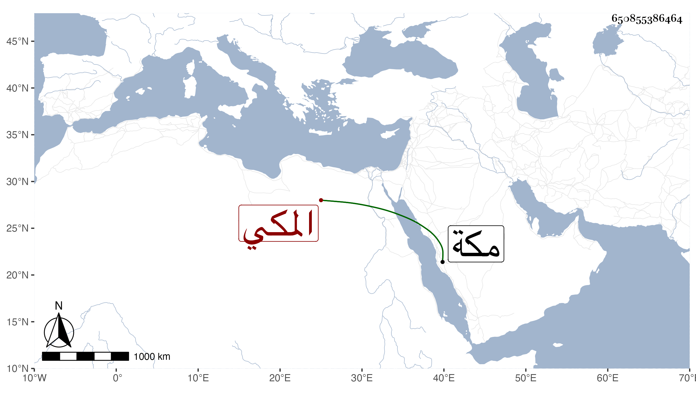

0902Sakhawi.DawLamic.ITO20230111-ara1.EIS1600.650855386464
Biography ID: 650855386464
58
محمد بن علي بن محمد بن علي بن محمد بن عمر بن عبد الله أبو السعادات ضيف الله بن النور بن الفاكهي المكي الماضي أبوه . ولد سنة أربع وستين وثمانمائة بمكة ونشأ بها وحفظ القرآن ونور العيون والتنبيه ممن حضر على الأميوطي وسمع في سنة تسع وستين على التقي بن فهد ، وكذا سمع منى بمكة واشتغل ولزم الفقه وأصوله والعربية وغيرها ولازم خاله السراج معمرا في العربية وفضل وتميز مع عقل ودين وقيام على اخوته وأقاربه وأكثر من الحضور عند البرهاني ابن ظهيرة وأثنى على عقله بل قرأ على ولده الجمالي في التقسيم وغيره . مات بعد تعلل نحو شهرين في ربيع الأول سنة ثلاث وتسعين .
